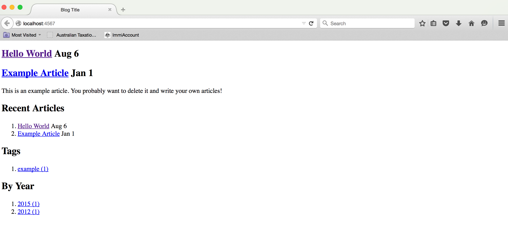

Setting up a blog with Middleman App and Github
< 6 Aug 2015>
Easy steps to:
a) setting up a Free Blog through Middleman b) with hosting on GitHub.
Note, this tutorial assumes you have:
- Ruby Installed
- Bundler Installed
- Git Installed
- A GitHub Account
- You can use your terminal
a) setting up a Free Blog through Middleman
1. create a file and install Middleman and add the blogging feature
for example,
$ mkdir middledopestuff
$ cd middledopestuff
$ gem install middleman
$ gem install middleman-blog
2. Initialize your beautiful blog application
$ middleman init MY_BLOG_PROJECT --template=blog
create MY_BLOG_PROJECT/Gemfile
run bundle install from "."
Fetching gem metadata from http://rubygems.org/.............
Fetching version metadata from http://rubygems.org/...
Fetching dependency metadata from http://rubygems.org/..
Resolving dependencies...
Using i18n 0.7.0
Using json 1.8.3
Using minitest 5.7.0
Using thread_safe 0.3.5
Using tzinfo 1.2.2
Using activesupport 4.1.12
Using addressable 2.3.8
Using builder 3.2.2
Using bundler 1.9.4
Using hitimes 1.2.2
Using timers 4.0.1
Using celluloid 0.16.0
Using chunky_png 1.3.4
Using coffee-script-source 1.9.1.1
Using execjs 2.5.2
Using coffee-script 2.4.1
Using multi_json 1.11.2
Using sass 3.4.16
Using compass-core 1.0.3
Using compass-import-once 1.0.5
Using rb-fsevent 0.9.5
Using ffi 1.9.10
Using rb-inotify 0.9.5
Using compass 1.0.3
Using erubis 2.7.0
Using tilt 1.4.1
Using haml 4.0.6
Using hike 1.2.3
Using uber 0.0.13
Using hooks 0.4.0
Using kramdown 1.8.0
Using listen 2.10.1
Using padrino-support 0.12.5
Using padrino-helpers 0.12.5
Using rack 1.6.4
Using rack-test 0.6.3
Using thor 0.19.1
Using middleman-core 3.3.12
Using sprockets 2.12.4
Using sprockets-helpers 1.1.0
Using sprockets-sass 1.3.1
Using middleman-sprockets 3.4.2
Using uglifier 2.7.1
Using middleman 3.3.12
Using middleman-blog 3.5.3
Bundle complete! 3 Gemfile dependencies, 45 gems now installed.
Use `bundle show [gemname]` to see where a bundled gem is installed.
create MY_BLOG_PROJECT/.gitignore
create MY_BLOG_PROJECT/config.rb
create MY_BLOG_PROJECT/source
create MY_BLOG_PROJECT/source/2012-01-01-example-article.html.markdown
create MY_BLOG_PROJECT/source/calendar.html.erb
create MY_BLOG_PROJECT/source/feed.xml.builder
create MY_BLOG_PROJECT/source/index.html.erb
create MY_BLOG_PROJECT/source/layout.erb
create MY_BLOG_PROJECT/source/tag.html.erb
create MY_BLOG_PROJECT/source/stylesheets
create MY_BLOG_PROJECT/source/javascripts
create MY_BLOG_PROJECT/source/images
3. Create a blog post
$ cd MY_BLOG_PROJECT
$ middleman article "Hello World"
create source/2015-08-06-hello-world.html.markdown
Here is the middleman site for more details
4. Look at your beautiful creation locally
$ middleman server
== The Middleman is loading
== The Middleman is standing watch at http://...local:4567/ (http://...:4567/)
== Inspect your site configuration at http://...local:4567/__middleman
middleman offers a server feature which can be accessed from your browser at:
localhost:4567

5. Build the site with your Middleman App
So, it looks like you have a site up and running, but there is still more to do. Your blog for example is actually written in Markdown language and the actual HTML files need to be “generated” by Middleman. Your actual static site needs to be built with a build command and a build/ folder will be generated in you application folder.
$ middleman build
create build/2012/01/01/example-article.html
create build/2015/08/06/hello-world.html
create build/feed.xml
create build/index.html
create build/tags/example.html
create build/2015.html
create build/2015/08.html
create build/2015/08/06.html
create build/2012.html
create build/2012/01.html
create build/2012/01/01.html
6. Copy these files to GitHub to host your site!
So, your blog is basically this build folder, and as your add blogs with the article command, you can update your site through the build command. The only problem right now, is that localhost:4567 is not available for other people to see. If you set your build folder to a specific GitHub remote repository, your site will be available for the whole world to see.
b) with hosting on GitHub.
GitHub explains how to host your site:
https://pages.github.com/
But, for the sake of completeness, I’ll just walk through the rest of your blog set up
- First, you need to create a GitHub repository named ‘username.github.io’ where username is your user name.
-
next, you initialize git on your
build/folder - set your GitHub repository